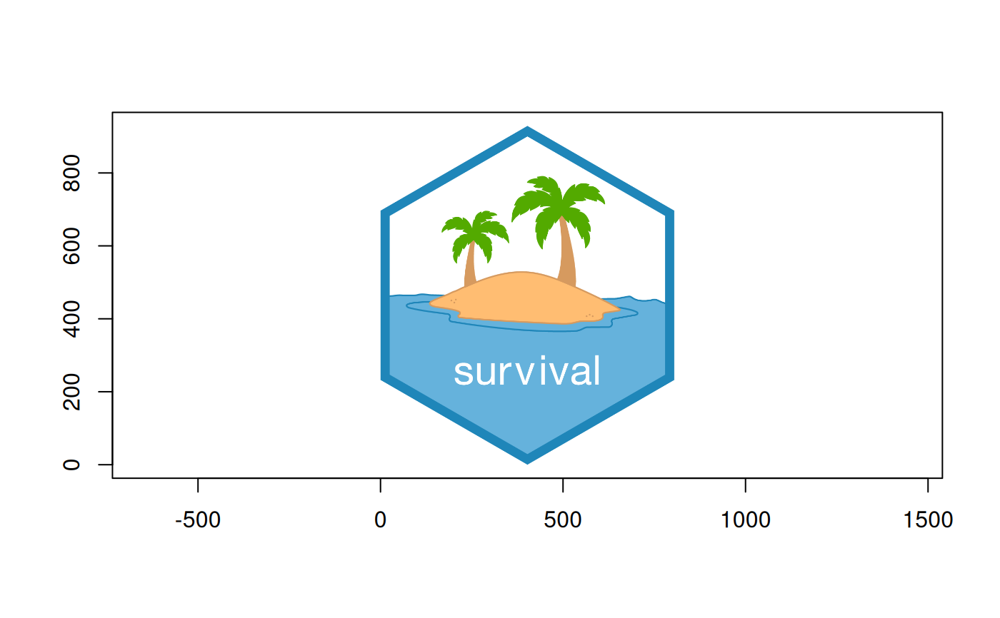

read_to_nativeRaster() will read from a raster dataset that is already open
in a GDALRaster object and return a nativeRaster object suitable for fast
rendering. By default, it attempts to read the full raster extent at full
resolution.
Usage
read_to_nativeRaster(
ds,
xoff = 0,
yoff = 0,
xsize = ds$getRasterXSize(),
ysize = ds$getRasterYSize(),
out_xsize = xsize,
out_ysize = ysize
)Arguments
- ds
An object of class
GDALRasterin open state, with 1, 3, or 4 bands of Byte data type.- xoff
Integer. The pixel (column) offset to the top left corner of the raster region to be read (zero to start from the left side).
- yoff
Integer. The line (row) offset to the top left corner of the raster region to be read (zero to start from the top).
- xsize
Integer. The width in pixels of the region to be read.
- ysize
Integer. The height in pixels of the region to be read.
- out_xsize
Integer. The width in pixels of the output buffer into which the desired region will be read (e.g., to read a reduced resolution overview).
- out_ysize
Integer. The height in pixels of the output buffer into which the desired region will be read (e.g., to read a reduced resolution overview).
Details
The dataset must have 1, 3, or 4 bands of Byte data type. For 1-band (grayscale) data, the value is replicated across RGB channels. For 3-band data, bands are interpreted as RGB. For 4-band data, bands are interpreted as RGBA.
Note
By default, this function will attempt to read the full raster into memory.
It generally should not be called on large raster datasets using the default
argument values. Use out_xsize and out_ysize for quick setting to smallish values,
such as 1024.
Examples
# read an RGB image as nativeRaster
img_file <- system.file("help/figures/logo.png", package="survival")
if (file.exists(img_file)) {
ds <- new(GDALRaster, img_file)
r <- read_to_nativeRaster(ds)
bb <- ds$bbox() ## will warn for non-spatial image but is harmless
ds$close()
plot(NA, xlab = "", ylab = "", asp = 1, xlim = bb[c(1, 3)], ylim = bb[c(2, 4)])
rasterImage(r, bb[1], bb[2], bb[3], bb[4])
}
#> Warning: failed to get geotransform, default returned
